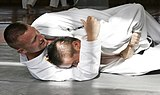
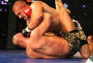

Дзюдо - Партер (боротьба)
Дзюдо - Партер (боротьба)Парте́р (фр. parterre; від par — «по» і terre — «земля») — площина взаємодії суперників в різних видах боротьби, що характеризується діями лежачи, сидячи або навколішках.
 
Правила
У партері бійцями проводяться різноманітні заломи і захвати, зчеплення, прийоми з дією на суглоби, м'язи і больові точки суперника, а також удушення. Боротьба в партері є основною площиною для застосування технік дзюдзюцу, дзюдо, панкратіону та інших видів боротьби. Протилежною боротьбі в партері є боротьба в стійці (див. клінч).
В змішаних бойових мистецтвах, де дозволено завдавати ударів лежачому супернику, в партері часто відбувається фінал двобою: добиванням суперника або підкоренням (больовим прийомом чи удушенням).
Правила маневрування і дій в партері залежать від конкретного єдиноборства. Правила спортивних змагань можуть відрізнятися в межах одного єдиноборства.